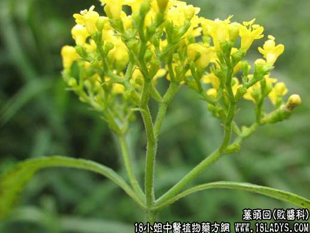

【中药概述】
墓头回为败酱科草本植物异叶败酱的根。苦，微酸、涩，微寒。归肝经。
1．清热解毒，消痈排脓，祛瘀止痛：用于治疗痈肿疮毒，跌打损伤，瘀肿作用等。
2．止血止带：用于虚寒型妇女崩漏下血，血瘀痛经，赤白带下，子宫颈靡烂，赤痢等，常与苦参，苍术，金樱子等同用。
【药效鉴别】
墓头回收涩止带，且可泄热。与土茯苓合伍，收涩止带中有清热祛湿，收涩不滞邪，功专泄热祛湿解毒止带。
【临证应用】
妇女白带：用墓头回，金樱子，苦参，知母，苍术，水煎服；治宫颈炎：取墓头回60g，枯矾30g，共研末，阴道给药，一次给药1g，每隔2天上药1次，10天为一疗程。
【用量用法】
本品9——25g，水煎服，或入剂。外用适量。